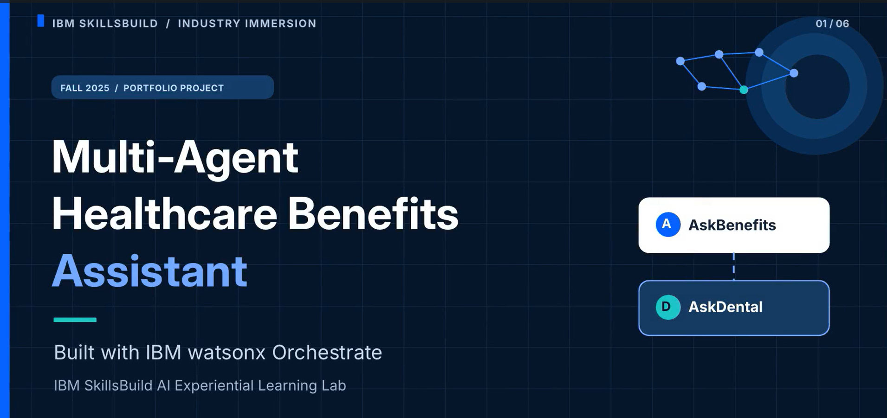
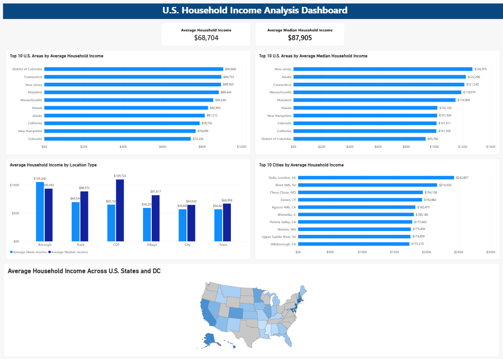
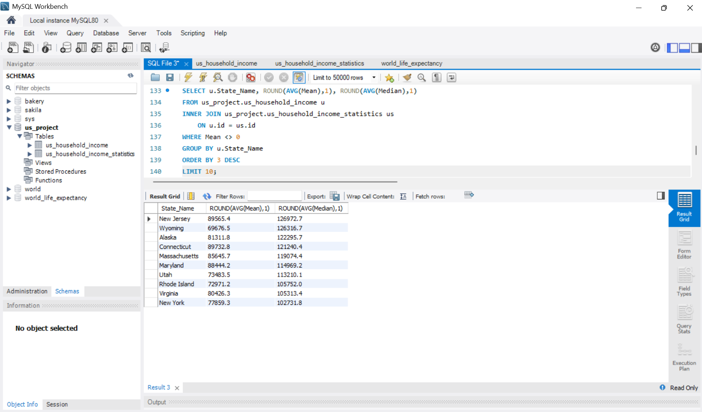
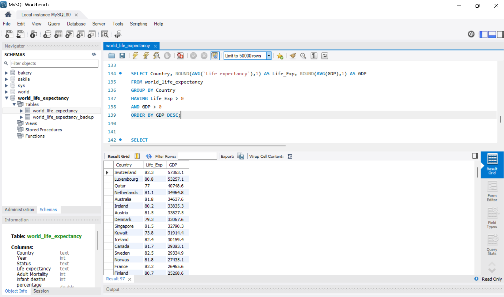
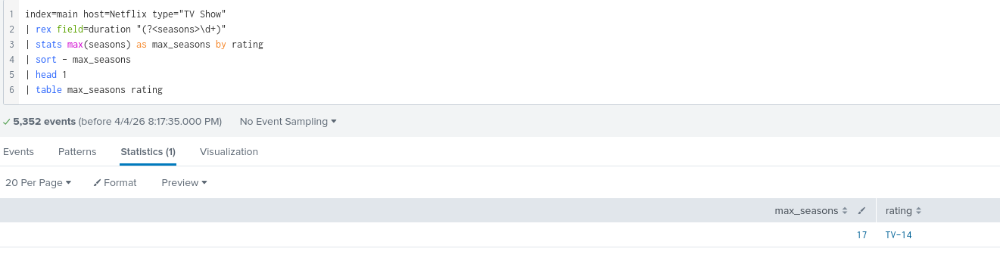
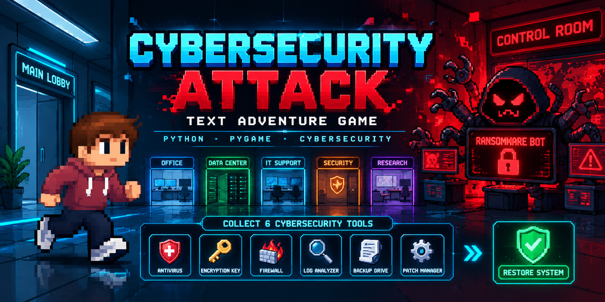

Projects

IBM Multi-Agent Healthcare Assistant
Built a multi-agent AI healthcare benefits assistant using IBM watsonx
Orchestrate, document-based knowledge, specialized agents, and agent
collaboration to help users navigate healthcare benefit information.
Tools:
IBM watsonx Orchestrate, Generative AI, AI Agents, Prompt Engineering
View Project
SolarWinds IOC Investigation
Investigated potential exposure to SolarWinds-related malicious
infrastructure by correlating Indicators of Compromise with internal
network proxy logs and validating suspicious indicators with threat
intelligence.
Tools:
Splunk, VirusTotal, Network Proxy Logs, IOC Analysis,
NIST Incident Response
View Project

U.S. Household Income Power BI Dashboard
Built an interactive Power BI dashboard to analyze household income
patterns across U.S. states, cities, and location types using KPI cards,
rankings, comparisons, and geographic visualization.
Tools:
Power BI, Power Query, Data Visualization, Data Analysis
View Project

U.S. Household Income SQL Analysis
Cleaned and analyzed U.S. household income data using MySQL to examine
income differences across states and locations and identify geographic
patterns using joins, aggregations, filtering, and exploratory queries.
Tools:
MySQL, SQL, Data Cleaning, Exploratory Data Analysis
View Project

World Life Expectancy SQL Analysis
Cleaned and explored global life expectancy data using MySQL to analyze
relationships involving life expectancy, GDP, mortality, development
status, and other health and economic indicators.
Tools:
MySQL, SQL, Data Cleaning, Exploratory Data Analysis
View Project

Netflix Data Analysis with Splunk
Analyzed a Netflix dataset using Splunk searches to investigate movies,
TV shows, ratings, countries of origin, release years, and other content
characteristics.
Tools:
Splunk Enterprise, SPL, Data Analysis
View Project

Cybersecurity Text Adventure Game
Developed an interactive cybersecurity-themed text adventure game in
Python using branching decisions, functions, conditional logic, loops,
and player-driven choices.
Tools:
Python, Conditional Logic, Functions, Game Design
View Project